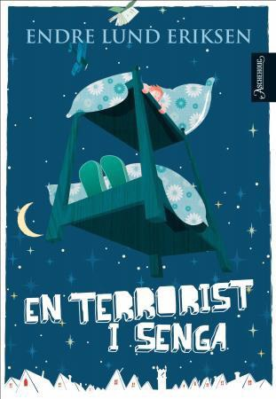
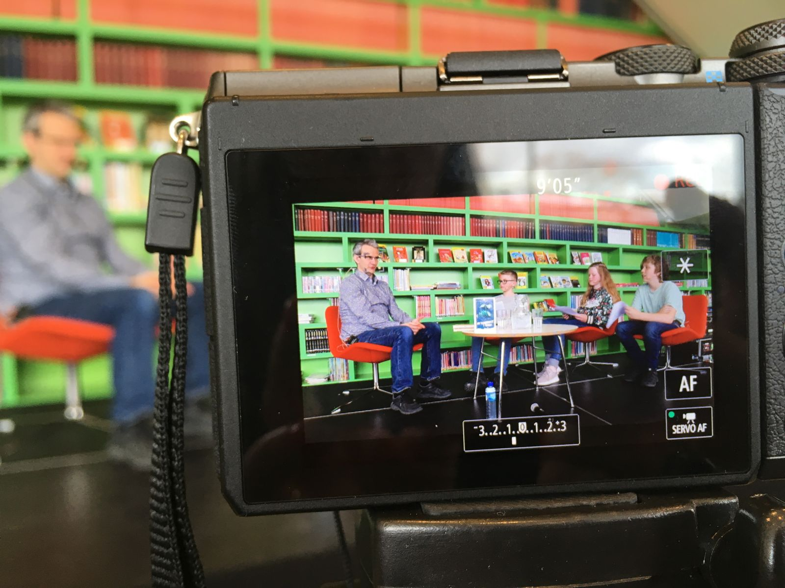

Tissen til Ali
Den er riktig nok nevnt i en bisetning, og forfatteren har ikke gjort så veldig stort nummer ut av den. Hva da? Hvor da? tenker du kanskje. Vi snakker selvfølgelig om tissen til Ali. Han i En terrorist i senga, vet du? Den boka av Endre Lund Eriksen (Aschehoug 2008).
Hovedpersonen Adrian har våkna på natta av at Ali (som ser ut som en helt vanlig ungdom, men som viser seg å være en alien, men det er ikke poenget her), som han smugla inn på soverommet sitt i går kveld, står kliss naken ved bokhylla og tisser i sykkelflaska til Adrian.
Æææææsj!!
Ja, det med sykkelflaska er litt æsj, det er de fleste av elevene enige om. Den lille passasjen genererer likefullt helt fine, moralsk orienterte diskusjoner. Er det for eksempel greit å tisse på noen sin sykkelflaske? I hvilke situasjoner er det i så fall greit?
Men! Det de virkelig lurer på er hvor stor tissen til Ali faktisk er. For i følge Adrian er tissen til Ali ganske så stor, men hvor stor er en ganske stor tiss? Det var ni (eller var det ti?) klasser som hadde lest En terrorist i senga. Og akkurat det spørsmålet ble stemt frem i samtlige grupper.

Fristende sensur og (u)sunn disposisjon av makt
Som samtaleleder er det potensielt fristende å nappe ut slike spørsmål fra bunken. Dessuten er det mulig! Man kan bare late som om flertallet sa nei, det er det jo ingen som vet! Og som voksen kan det muligens være fristende å si at det spørsmålet ikke er relevant. Argumentere, kanskje rødmende til og med, for at det jo bare er en tullete detalj; ikke viktig.
Men hvem avgjør hvilke detaljer som er viktige – eller relevante – i en tekst?
At en voksen (eller hvem som helst) bestemmer – eller korrigerer – hva som er verdt å feste seg med i en fortelling, vil antagelig forringe leseopplevelsen noe, senke iveren etter å gi seg i kast med neste roman; ut i et nytt eventyr. Og kanskje særlig i en periode hvor man ikke ennå har grep om sin identitet som leser.
Det er riktig nok, mest sannsynlig, svært begrenset hvor ofte det er aktuelt å trekke frem kjønnsorganer i et bokbad på mellomtrinnet, men når det først står der… det står der, altså har det relevans. Dessuten har forfatteren skrevet det, så sannsynligheten er stor for at hen syns det er greit å både svare på og snakke om. (Noe annet ville jo ærlig talt blitt litt dumt).
I akkurat dette tilfellet ble det slik at Lund Eriksen fikk spørsmålet i samtlige av de seks arrangementene i Buen kulturhus. Og han svarte villig vekk.

Så hvor stor var tissen til Ali egentlig?
Tja. Bruk fantasien, da vel.